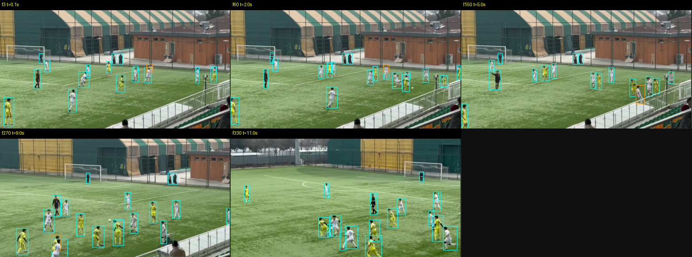
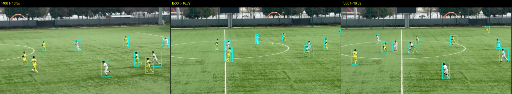
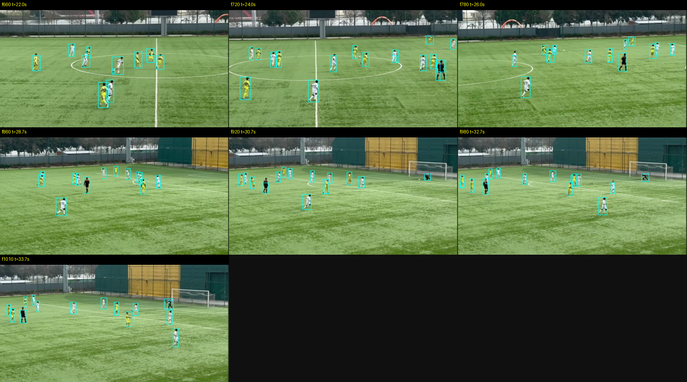
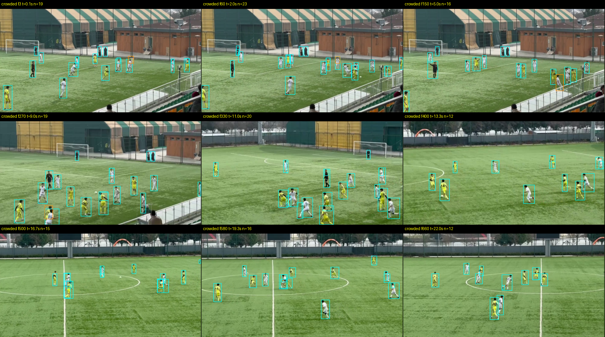
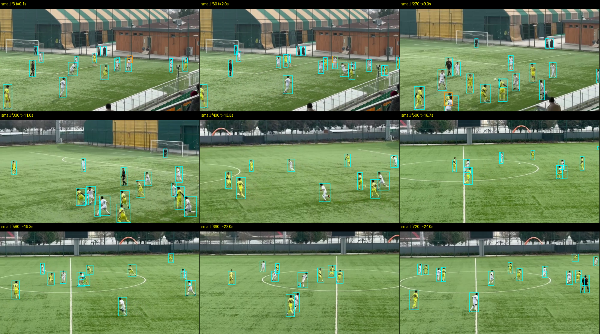
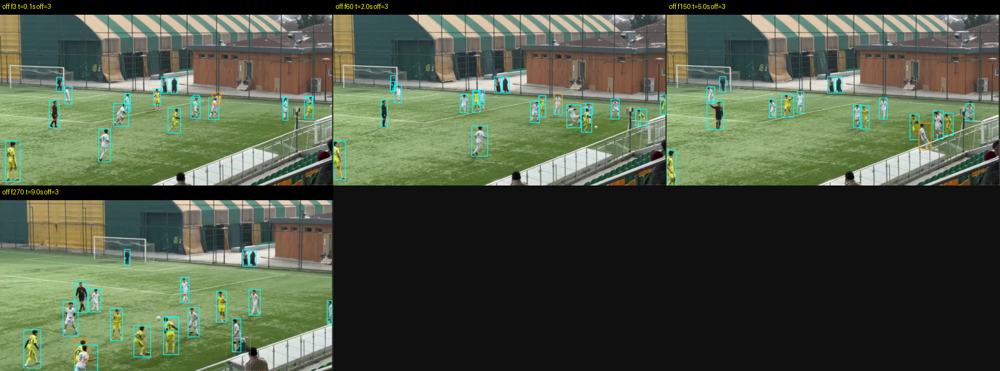
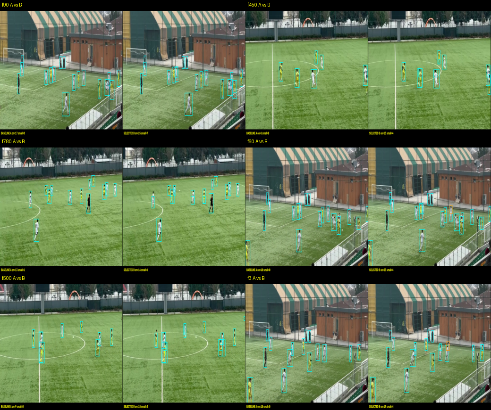

Bu paket bağımsız GT / freeze / acceptance metriği değildir. Renkler takım veya rol belirtmez. Yalnız insan algılama önerileridir.
Start

Middle

Holdout

Crowded

Small/distant

Off-pitch filtering

Before / after

Legend: Cyan solid = on-pitch human candidate · Gray dashed = off-pitch · Orange = uncertain